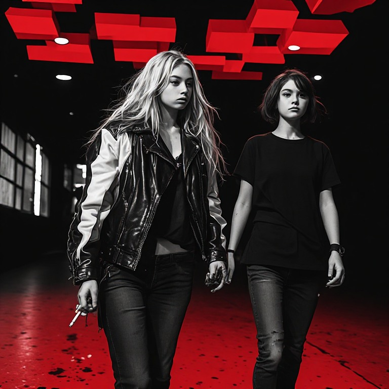
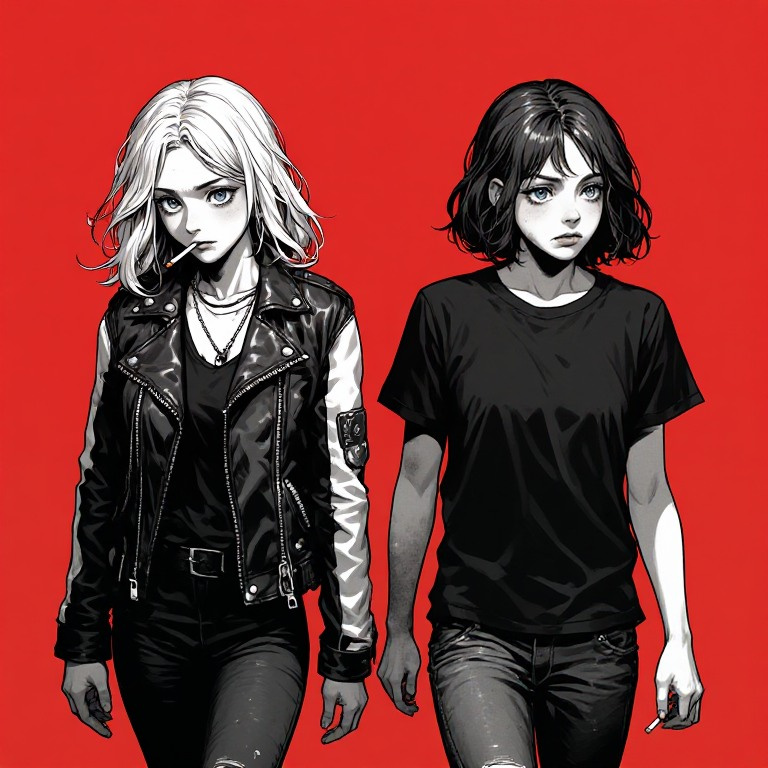

Point-&-Click Adventure
Explore film-still scenes of the Velvet District. Search the frame, work the hotspots, follow the story deeper backstage.
A dark urban-fantasy browser RPG
After midnight, the corridors of The Red Room loop back on themselves — into the Backstage Between, a shadow world that steals sound and memory.
Enter the Red RoomFree · No install · Plays in your browser
Act I — The Looping Halls
Chloe, 19, plays razor guitar for tips in the neon haze of the Velvet District. Her sister Ash keeps a switchblade in her sleeve and the setlist in her head. Their home stage is a nightclub called The Red Room — and tonight, after the last encore, its red corridors stopped leading anywhere.
Something in the Backstage Between is hollowing out the club's people — their voices first, then their memories. Regulars stare at nothing. The mirror wall lies shattered into glittering Shards. And out in the hallway, a Neon Wisp is humming a song Chloe never wrote.
Find what's feeding on the Red Room. Get out before the halls close the loop.
What you'll play
Explore film-still scenes of the Velvet District. Search the frame, work the hotspots, follow the story deeper backstage.
Classic command combat against Shadow-touched creatures. Exploit elements — Ember, Volt, Frost — and watch the damage pop.
Chloe's razor guitar, Ash's live-wire blade. Switch mid-fight, learn new skills as you level, and spend hard-won Shards.
No install, no account required, no price tag. Saves live on your device. Open the link and you're in the club.
From the world of CHLOE

